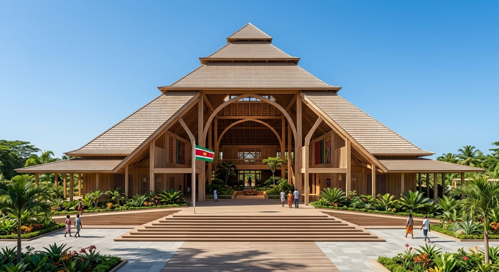
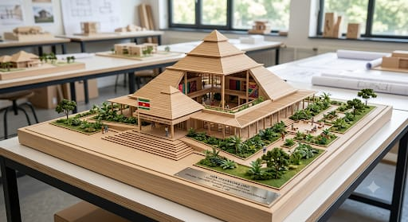
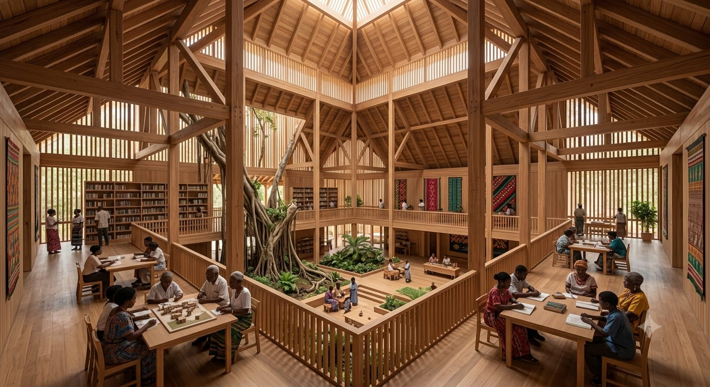
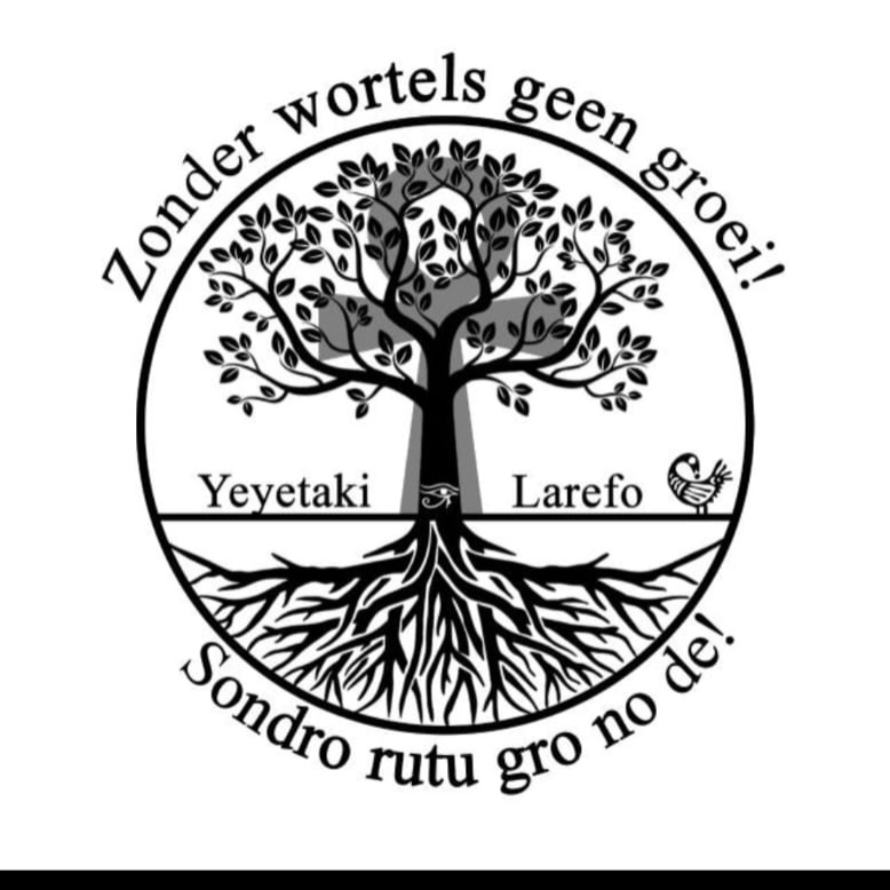
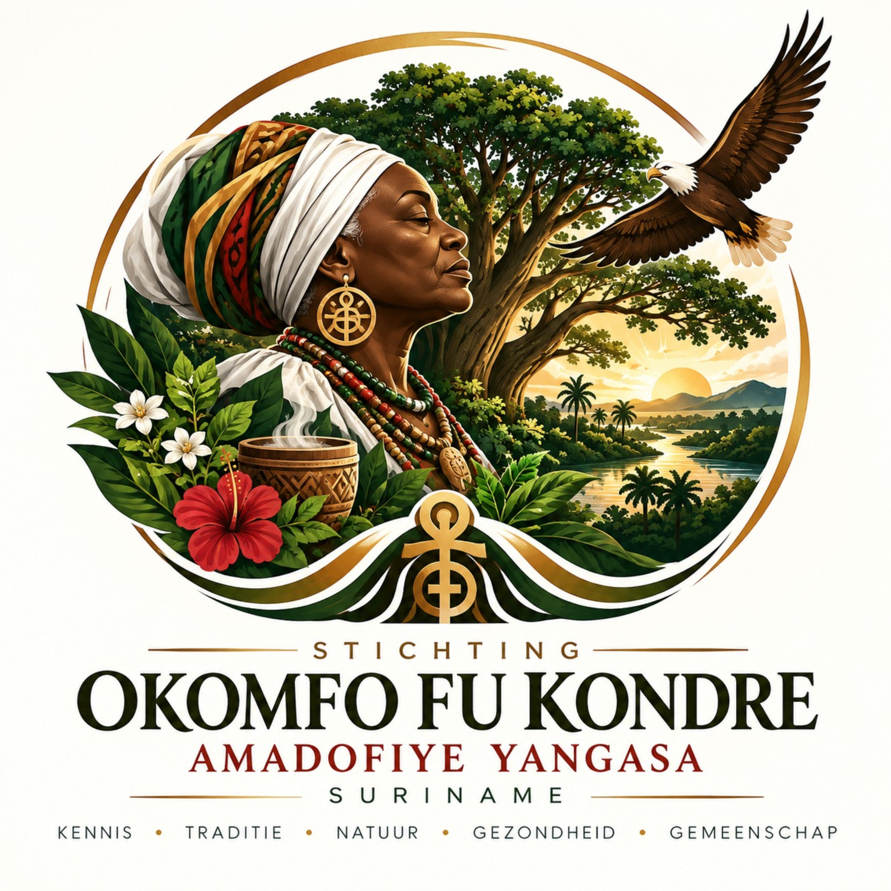
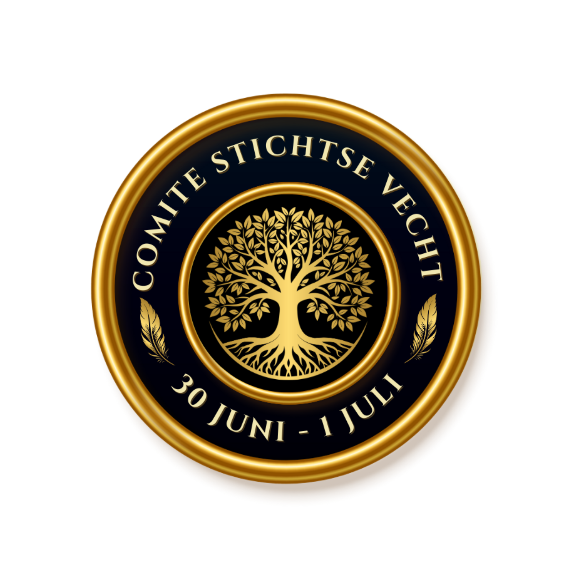
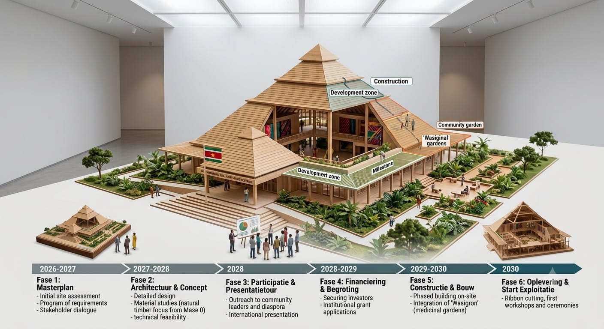

Beveiligde Toegang

Winti Kennis Centrum – Suriname
Help ons de initiële architectuur- en erfgoedfase te realiseren.
Kon Makandra Oso is meer dan een architectonisch monument; het is een levendig depot van Afro-Surinaamse wijsheid. Generaties lang is Winti-kennis, rituelen en mondelinge geschiedenis gemarginaliseerd en verborgen gebleven.
Dit centrum transformeert dat verhaal. Door een fysiek en spiritueel thuis te creëren voor Winti-kennis, maken we de overgang van verborgen tradities naar toegankelijk erfgoed, en waarborgen we de overdracht op meerdere generaties door middel van onderwijs, onderzoek en gemeenschapsverbinding.
Geïnspireerd op de piramides van Kemet en het traditionele Winti-cosmogram, is het gebouw zelf een statement van het terugclaimen van identiteit, het bevorderen van waardigheid en het bouwen aan een duurzame toekomst geworteld in voorouderlijke wijsheid.

Van voorouderlijke kennis naar een levend kenniscentrum
Ontdek in deze korte video de visie achter Kon Makandra Oso — een eigentijds Winti Kennis Centrum waar erfgoed, spiritualiteit, educatie, architectuur en gemeenschap samenkomen. Maak kennis met de betekenis van het project, de architectonische visie en onze ambitie om Afro-Surinaamse kennis en mondelinge geschiedenis door te geven aan toekomstige generaties.
Een eigentijds kenniscentrum, geworteld in traditie.
Kon Makandra Oso is een plek waar kennis, cultuur, spiritualiteit, natuur en gemeenschap samenkomen. De architectuur is geïnspireerd op de monumentale principes van Oud Kemet, maar vertaald naar een Surinaamse context met natuurlijke materialen, open ruimtes en een sterke verbinding met de natuur.

Meditatie, rituelen, sterrenkennis. Het hoogste punt van het gebouw, ontworpen voor stilte, reflectie en verbinding met de kosmos. Het dient als een heilige ruimte voor Winti-rituelen en spirituele praktijken.
Samen bouwen aan kennis, erfgoed en toekomst.

Stichting Yeyetakiseti
Stichting Okomfo Fu Kondre
Stichting Comité 30 juni / 1 juli* Vervang de bovenstaande tekstplaceholders door de officiële logo's van de organisaties.
Sluit je aan bij ons netwerk van diaspora-leiders, onderzoekers en partners.
Van masterplan naar realisatie: onze strategische tijdlijn voor 2026–2030.

Afronden van het architectonisch ontwerp, veiligstellen van grondvergunningen en opzetten van de bestuurlijke structuur.
Lanceren van de internationale fondsenwervingscampagne, veiligstellen van subsidies en formaliseren van partnerschappen met erfgoedinstellingen.
Ceremonie voor de eerste steen, voorbereiding van de locatie en bouw van de fundering en het structurele frame.
Ontwikkeling van de 11 functionele zones, installatie van duurzame energiesystemen en aanleg van de tuinen.
Officiële inhuldiging, opening van de bibliotheek, tentoonstellingsruimtes en start van de educatieve programma's.